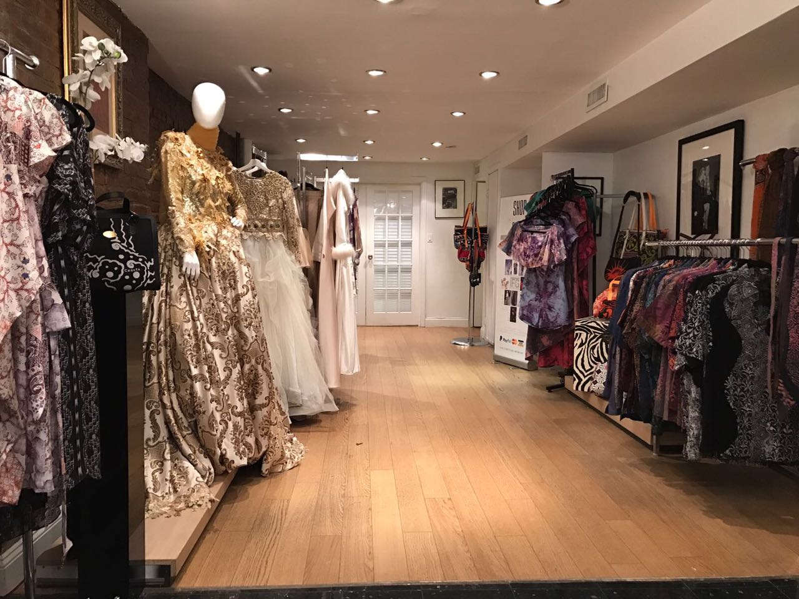
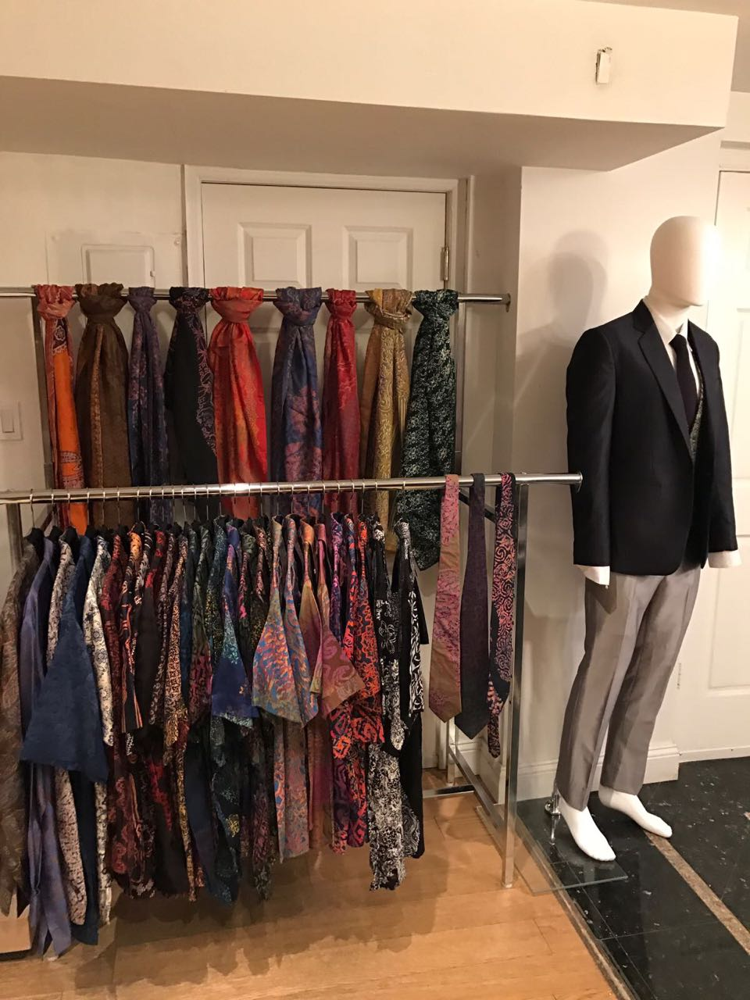
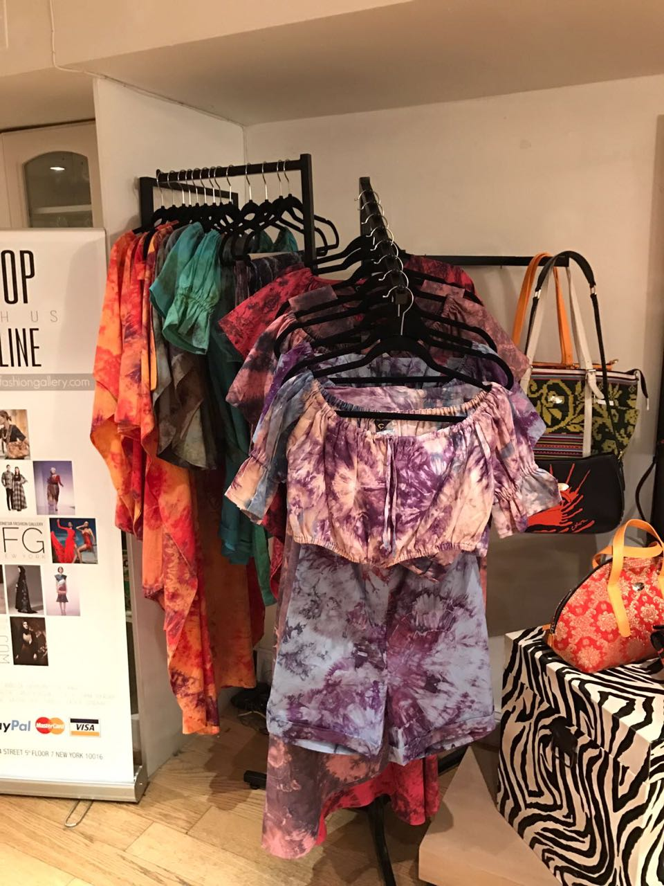

Alleira Batik
C By Angel
Clo By Coreta Indonesia

Beyond the delis, pizza joints and bars, on 31st street and Park ave, there is something unusual about this Kips Bay block. A taste of Indonesian Fashion-wear. 10,044 miles away, in Jakarta Indonesia Teti Rompi, with the help of others launched their brand, Indonesian Fashion Gallery. From ballgowns to kids wear, this store hopes to bring a presence of Indonesian style to New York City, something the fashion capital of the world lacks. With an appearance in the 2016 fashion week, IFG is just beginning to make their mark in the United States. Designers including Anneisa Hasbun, who launched her 2016 Muslim-fashion line in NY Fashion week just this fall, the first NY Fashion week had ever seen. Other designers include Alleira Batik, Anggia Handmade, C by Angel, Clo by Coreta Indonesia, Maison Met by Mety Choa, Mira Indria Couture, and Vivi Zubedi.
CEO, Teti Rompis is from West Java Indonesia, and majored in Agricultural Cultivation. She began her career by developing paperless communication in Indonesia, and market software for different integrated systems. In 1988, when the Monetary Crisis (economic crisis) in Indonesia hit, Rompis intended to create jobs by opening a bakery shop and began food catering for factories. In 2009, she began creating documentary films and creative industry products amongst many islands in Indonesia.
Hover over image.
Source: Teti Rompis Facebook
A new start in the fashion industry in 2014, Rompis partook in trade and fashion shows for branding Indonesian products in the United States and Europe. From that, she created IFG to become “The representative of Indonesian fashion and creative industry in the U.S.A. At the time, there was a high demand of Indonesian products and a demand for a representative store in the U.S. " I was inspired to create IFG to make business transactions easier between entrepeneurs who joined trade shows and designers who wanted to showcase their collections. From there, they brought their designs and opened up the shop in New York."
“IF YOU CAN MAKE IT IN NEW YORK CITY, YOU CAN MAKE IT ANYWHERE"
Rompis is inspired by Indonesian fashion because of the country’s diversity and unique motifs and different fabrics on every island. Indonesia is a country full of diversity, especially in fashion, which has different and unique motifs and fabric on the different islands. The store is rather selective of their designers, and want to ensure that they are bringing their culture into their designs.
"First we do curation of the designers, the criteria of the curation includes :product quality, the designer’s popularity in their country, their outlet, and big production capacity to ensure that they are ready to export their products. She went on to explain, "It is very competitive because there are a lot of great Indonesian designers but we have to find the best of the best and the most consistent to maintain their branding and product quality to satisfy the international buyers."
The goal of IFG was to create an Indonesian Fashion Hub all over the world according to Fashion director Dina Fatima. Fatima originally began her “fashion career” in the oil and gas business, and had no real experience in the fashion industry before working for a local Indonesian fashion magazine. Fatima moved on to work for a designer in Indonesia where she met the now CEO of IFG, Teti. From there the two created the hub with the original 8 designers.
“INDONESIA FASHION HAS POTENTIAL TO BE EXPLORED AND PROMOTED TO THE GLOBAL WORLD.”
Anniesa Hasibuan Collection
The start of IFG was not small, beginning their launch at Paris popup shows and meeting indonesian designers interested in expanding the brand. The goal was to brand the company, appearing in a chicago pop-up show as well. Once they got their brand out there, it was time to see if they could make it in New York. The process is not easy according to Rompis. "Through curation, the criteria includes : the designer’s popularity in the country, their outlet, and big production capacity to ensure that they are ready to export their products."
Annesia was born in Jakarta, Indonesia and raised as a Muslim. Her fashion collections have always featured a headscarf. A mixture of “muslim couture”, royal fashion to casual-wear, Hasibuan appeals to all different kinds of women. Being the first to have a Muslim-line Hijab to appear in 2016 NY Fashion-week, Hasibuan explains she was nervous but excited to bring her identity to show the world.
Hover over image.
Source: @anniesahasibuanofficial
She began her fashion career appearing in fashion shows around the world in Turkey, London and Jakarta before appearing in NY Fashion Week. Hasibuan explains that fashion and culture and Indonesia is difficult. “It’s really hard to connect culture with fashion in Indonesia, becAuse Indonesia has many provinces and in every province they have their own culture and rules. So Irespect that, and need to be careful when I want to make the collections.”
Hover over image.
Hasibuan wants to continue expressing her identity through the fashion world, designing, creating and presenting. Like IFG, Hasibuan would like to continue exploring indonesian fabrics and bringing awareness to International people about Indonesia. Most of all, it’s about making people feel comfortable in their clothes.
Hover over image.
Source: @anniesahasibuanofficial
Rompis also had a lot of incolvement in getting Hasibuan and IFG to Fashion Week. Hasibuan explains her involvement. "It was exciting, and I was incredibily proud that Indonesian Industry coould finally get into New York Fashion Week and New York market. Along with geting into the New York market, Rompis explains that this was an oppurtunity to expand their brand throughout the United States. "It was also the gate for Indonesia fashion to be more popular in U.S.A. We want to support Indonesia to become the pioneer of modest movement and the center of hijab in the world by joining New York Fashion Week."
As the global expansion of the company continues, Indonesian fashion will be spread throughout the rest of the United States. This step of opening a store as well as habing Hasibuan participate in Fashion week will only enhance their branding oppurtunites. "IFG will soon become a representative of Indonesian designers and entrepeneurs for trading, show, wholesale, and retail in order to increase national export," said Rompis in regards to her hopes for the future. They are always looking for fresh inspiration and new ideas to continue expanding.
"I hope in the next one or two years, Indonesia fashion will be more popular, greater, and widely spread in New York City with our branding strategy because Indonesian fashion is already demanded by many buyers in the U.S.A."
Source: indonesianfashiongallery.com

Source: indonesianfashiongallery.com